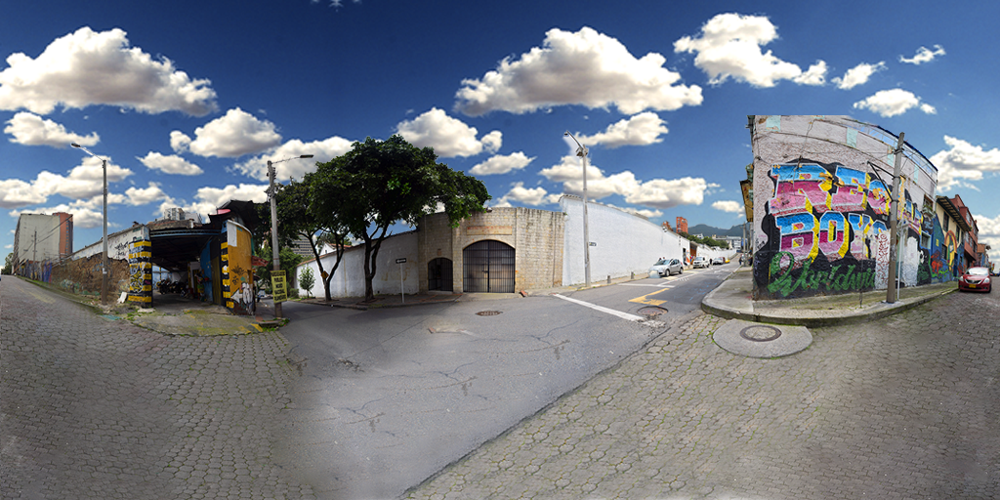

<!-- <!DOCTYPE html>
<html lang="en" >
<head>
  <meta charset="UTF-8">
  <title></title>
  <link rel="stylesheet" href="./style.css">
  <link rel="stylesheet" href="../css/hover.css">
  <link rel="stylesheet" href="../css/main.css">
</head>
<body>

<div id="isla" class="minifancy heartbeat" style="position: fixed;display: none;z-index: 1;">
  <div id="subisla heartbeat" class="recuadro_verde slide-in-bck-bottom delay-1s" style="height: 60%;">
  <div class="cerrarminifancy hvr-pulse" onclick="cerrarinfo();"></div>
    <div class="centro">
      <h2 class="bold tracking-in-expand delay-2s">Isla</h2>
      <p class="tracking-in-expand delay-3s">
        Es la base o soporte del surtidor. Es de material resistente y no inflamable, sobre el cual van instalados los surtidores o bombas de expendio, construida con una altura mínima de veinte (20) centímetros sobre el nivel del piso y un ancho no menor de un metro con veinte centímetros (1.20 m) para dar cumplimiento al Decreto 1073 Artículo  2.2.1.1.2.2.1.4.<br><br>
        Recuerde mantener demarcada y señalada la zona de atención de vehículos.
      </p>
    </div>
    <div class="abajo skinLupa islaImg">&nbsp;</div>         
  </div>
</div>

<div id="surtidor" class="minifancy heartbeat" style="position: fixed;display: none;z-index: 1">
  <div id="subsurtidor" class="recuadro_verde slide-in-bck-bottom delay-1s" style="height: 60%;">
  <div class="cerrarminifancy hvr-pulse" onclick="enviarAlPadre(4);"></div>
    <div  class="centro">
      <h2 class="bold tracking-in-expand delay-2s">Surtidor</h2>
      <p class="tracking-in-expand delay-3s">
        Es una máquina que se encuentra en la estación de servicio, encargada de suministrar combustible a los vehículos. Se compone de dos partes principales: la "Unidad de Control Electrónico", que permite controlar aspectos como la cantidad de combustible y su correspondiente valor; en segundo lugar, una sección mecánica que contiene elementos para bombear físicamente el combustible.
      </p>
    </div>
    <div class="abajo skinLupa surtidorImg">&nbsp;</div>         
  </div>
</div>


<div id="container">

  <a href="" id="reiniciar" style="display: none;">
    
  </a>
	 
</div> -->
<!-- partial -->
<!-- <script src='../js/tree.js'></script>
<script src='../js/panolens.js'></script>
<script  src="script.js"></script>

</body>
</html>


<script type="text/javascript">

  function enviarAlPadre(diapo){
     cerrarinfo();
     parent.cont = diapo;
     parent.cargaHtml();      
  }

  function isla(){
    document.getElementById("isla").style.display = "flex";
    document.getElementById("subisla").style.animationName = "heartbeat";
   }
  function surtidor(){
    document.getElementById("surtidor").style.display = "flex";
    document.getElementById("subsurtidor").style.animationName = "heartbeat";
  }
  function cerrarinfo(){
    document.getElementById("isla").style.display = "none";
    document.getElementById("surtidor").style.display = "none";
  }

  function cerrarx(){
    document.getElementById("isla").style.display = "none";
    document.getElementById("surtidor").style.display = "none";
  }

</script>


<meta name="viewport" content="width=device-width, initial-scale=1.0">
<style>
* {
  box-sizing:border-box;
}
</style> -->


